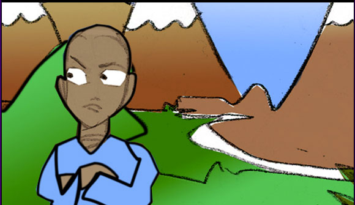
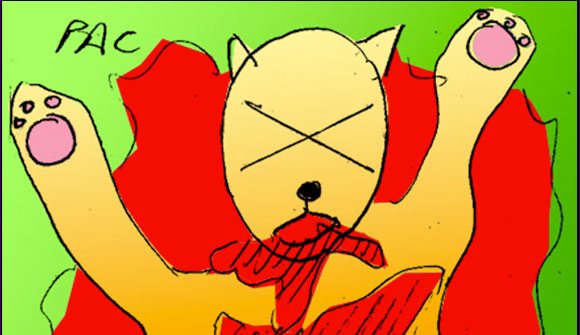
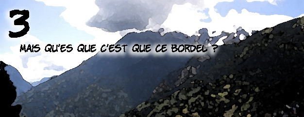
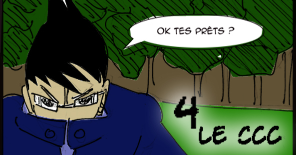
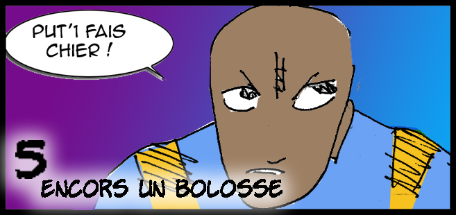
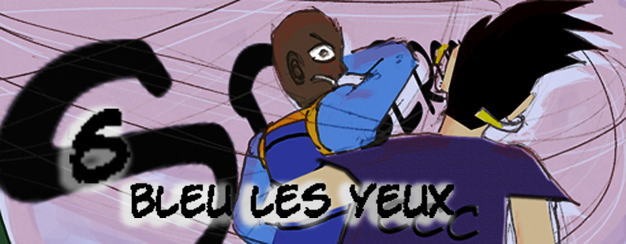

← Retour à l'accueil
Chapitres disponibles

Chapitre 1 : Le Commencement
Fantaryou découvre ses pouvoirs dans un monde fantastique. Une aventure épique commence.
31 pages
Lire ce chapitre

Chapitre 2 : La Forêt Mystérieuse
Une exploration périlleuse dans les forêts enchantées du royaume.
30 pages
Lire ce chapitre

Chapitre 3 : La Rencontre
Une alliance inattendue se forme dans les montagnes interdites.
30 pages
Lire ce chapitre

Chapitre 4 : Le Temple Ancien
Découverte des secrets ancestraux cachés depuis des millénaires.
32 pages
Lire ce chapitre

Chapitre 5 : La Cité Cachée
Exploration des souterrains mystérieux de la cité oubliée.
31 pages
Lire ce chapitre

Chapitre 6 : L'Océan des Âmes
Traversée des eaux mystiques peuplées d'anciens esprits.
33 pages
Lire ce chapitre🚀 Plus de chapitres à venir !
D'autres aventures de Fantaryou seront disponibles prochainement.